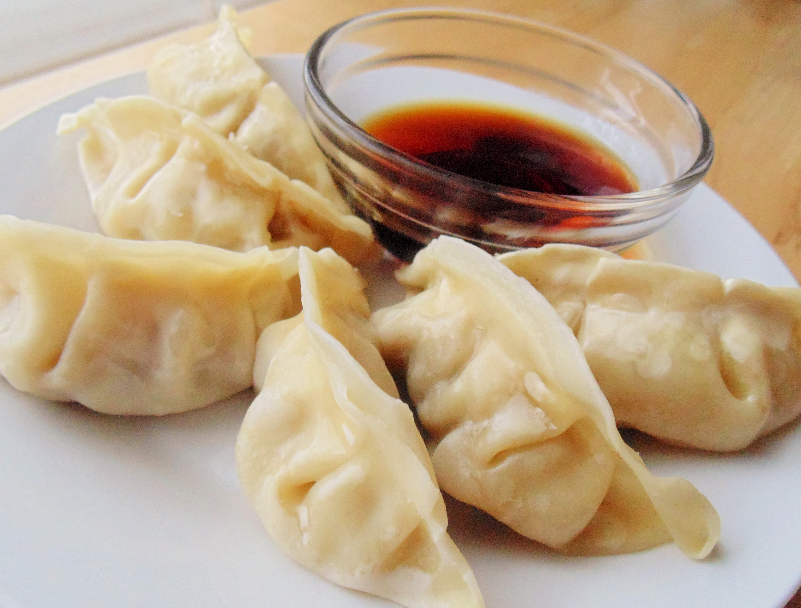

Pork Dumpling

Description
The pork dumpling is my go-to homesick dish. Every time I miss my home country and my parents, I make myself some handmade pork dumplings and it reminds me the old time when I make them with my parents.
This recipe is from
Food and Wine
Ingredients
dipping sauce:
- 1/3 cup sake
- 1/4 cup soy sauce
- 1/4 cup unseasoned rice vinegar
- 1 tablespoon sugar
- 3 thin slices of garlic
- 1 tablespoon minced scallion
- 1/2 tablespoon minced fresh ginger
- 1 tablespoon hot-chile sesame oil
dumpling:
- 1/2 head napa cabbage (1 pound)—root cut off, cabbage halved lengthwise
- 3/4 pound ground pork
- 1/4 bunch Chinese chives or 2 scallions, minced
- 1 tablespoon finely grated fresh ginger
- 1 tablespoon dark or regular soy sauce
- 1/2 tablespoon finely grated garlic
- 1 teaspoon toasted sesame oil
- 3/4 teaspoon kosher salt
- 2 tablespoons vegetable oil
- 2 3/4 cups all-purpose flour
- Cornstarch, for dusting
Steps
make the dipping sauce
- In a small bowl, stir together all of the ingredients.
make the dumplings
- Set a steamer basket in a pot of boiling water. Steam the cabbage until tender, 20 to 25 minutes. Transfer to a colander to cool, then squeeze out as much excess liquid as possible. Finely chop the cabbage.
- In a large bowl, combine the cabbage with the pork, chives, ginger, soy sauce, garlic, sesame oil, salt and 1 tablespoon of the vegetable oil. Gently stir, cover and refrigerate for at least 4 hours or overnight.
- Put the flour in a large bowl. Slowly add 1 cup of cold water and the remaining 1 tablespoon of vegetable oil, stirring constantly with a wooden spoon, until the dough starts to come together. Using your hands, knead the dough until it forms a ball, then knead the dough on a work surface until smooth, about 5 minutes. Transfer the dough to a clean bowl, cover and refrigerate for at least 30 minutes and for up to 3 hours.
- Dust a baking sheet with cornstarch. Cut the dough into 4 equal pieces, then roll each piece into 1-inch-thick logs, 8 inches long. Using a sharp knife, cut the logs into eight 1-inch pieces. Using a rolling pin, roll the pieces into 3 1/2-inch rounds, keeping the dough covered with plastic wrap as you work to prevent the dough from drying out. Dust the rolling pin occasionally with cornstarch to prevent sticking.
- Place about 1 tablespoon of the filling in the center of each round, then fold over one side to form a half circle, pressing to adhere, or pleating decoratively along the edge to seal. Place filled dumplings on the prepared baking sheet and cover with plastic wrap while you prepare the rest.
- Bring a large pot of water to a boil. Cook dumplings in batches of about 8 until they are cooked through, 3 to 4 minutes. Using a slotted spoon, transfer the dumplings to a serving platter. Serve warm with the dipping sauce.